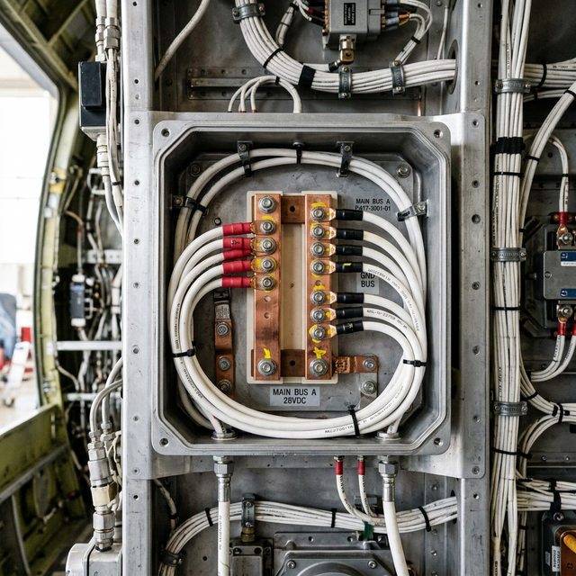

Buses and distribution
Module Objectives
- Define the function of an electrical bus in an aircraft power distribution system.
- Contrast the purpose of a Main Bus with an Avionics Bus.
- Explain how bus architecture isolates operational faults.
Why Does This Matter?

You flip the single Avionics Master switch on the panel, and instantly power flows to the GPS, both Comm radios, the transponder, and the audio panel simultaneously. How does one simple switch feed five different high-draw components? They are all physically connected to the same bus — the central distribution artery of the aircraft. When troubleshooting a "dead radio" versus a "dead panel," understanding bus architecture is what tells you exactly where to put your multimeter first.
What You Need To Know
What Is an Electrical Bus?
An electrical bus (or bus bar) is a common, highly conductive distribution point (typically a solid copper or aluminum bar, or a heavy-duty terminal strip) configured to:
- Intake high-amperage power from one or more sources (battery, alternator/generator).
- Distribute that power to multiple individual loads (radios, lights, motors).
- Operate purely as a parallel distribution system — meaning all connected loads share the exact same system voltage.
Common Bus Architecture
Modern General Aviation aircraft utilize multiple buses to manage power safely:
- 1. Main Bus (or Primary Bus): Connected directly to the alternator and battery master relay. It powers essential airframe systems (lights, flaps, fuel pumps).
- 2. Avionics Bus: A separate bus dedicated exclusively to sensitive electronics. It is connected to the Main Bus via the Avionics Master switch (often a relay). Its primary purpose is to keep avionics isolated and powered off during engine start, protecting delicate microprocessors from massive voltage spikes caused by the starter motor engaging.
- 3. Essential/Emergency Bus: A highly protected bus that remains powered even if the main bus fails or shorts. It is wired directly to the battery or a backup battery, powering only critical flight instruments (AHRS, primary comm) needed to land safely.
Why Architecture Dictates Troubleshooting
Separating loads into different buses provides fault isolation and load-shedding capabilities. If a massive short circuit occurs in the landing light wiring, it might pop the massive 50-amp Main Bus feed breaker. If all the avionics were on the Main Bus, you'd lose your radios in the dark. But because the Avionics Bus is often isolated or on a separate feed from the battery tie, you retain communications.
System Visualization
graph TD
A[Aircraft Battery] --> B[Battery Master Contactor]
B --> C((MAIN BUS 28V))
D[Alternator] --> C
C -->|Breaker| E[Landing Lights]
C -->|Breaker| F[Flap Motor]
C --> G[Avionics Master Switch / Relay]
G --> H((AVIONICS BUS 28V))
H -->|Breaker| I[Comm 1 Radio]
H -->|Breaker| J[GPS/Nav System]
H -->|Breaker| K[Transponder]
style C fill:#1e40af,stroke:#1e3a8a,stroke-width:2px,color:#fff
style H fill:#166534,stroke:#14532d,stroke-width:2px,color:#fff
On The Job
When troubleshooting a "no power" discrepancy, establish whether the failure is localized (one radio) or systemic (all radios). Start at the bus. Is the avionics bus actually energized to 28V? Check the heavy bus feed terminal with a voltmeter. If the bus is hot but the component is dead, the problem is downstream (breaker, wiring, connector). If the bus is dead, the problem is upstream (Avionics Master relay, contactor, or tie breaker).
Reference Terms
Aircraft electrical bus
An electrical bus is a common conductive distribution point connected to one or more power sources (battery, alternator) and multiple loads (avionics, lights, systems). All loads connected to the bus share the same voltage source.
Aircraft DC electrical system — purpose
The DC electrical system supplies power to all electrically-powered equipment: avionics (radios, navigation, flight instruments), lighting, ignition systems, fuel pumps, and other electrical loads — during all phases of flight from pre-start through shutdown.
GA aircraft DC system purpose
The DC electrical system in a GA aircraft powers: avionics (radios, navigation equipment), lighting (position lights, landing lights, interior), ignition systems, electric fuel pump, and any other electrically-operated equipment.
Bus (Bus Bar)
A central, high-capacity distribution point connecting power sources to multiple parallel loads.
Avionics Master
A switch/relay that isolates the avionics bus from the main bus to protect sensitive electronics during engine start transients.
Fault Isolation
Designing a system so that a failure in one section (like a short on the main bus) does not cascade and disable critical secondary systems.
Assessment Check
A bus distributes power in parallel — the main bus powers the airframe, while the avionics bus isolates sensitive electronics from engine-start voltage spikes. --- ---